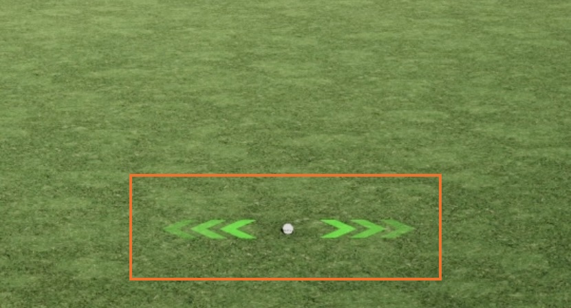
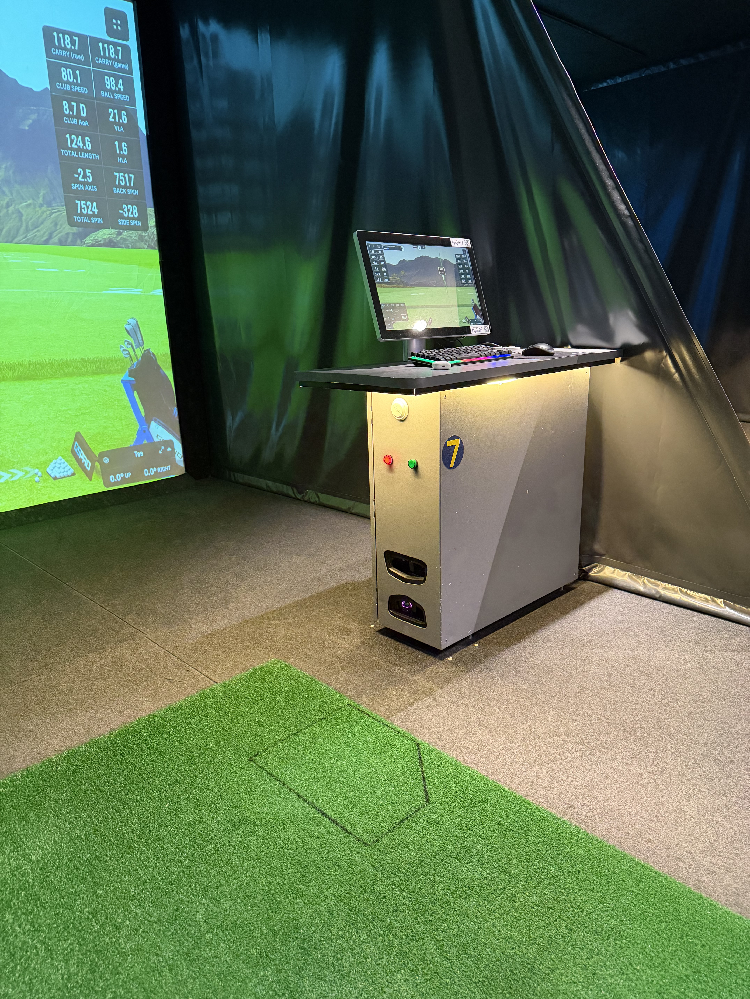
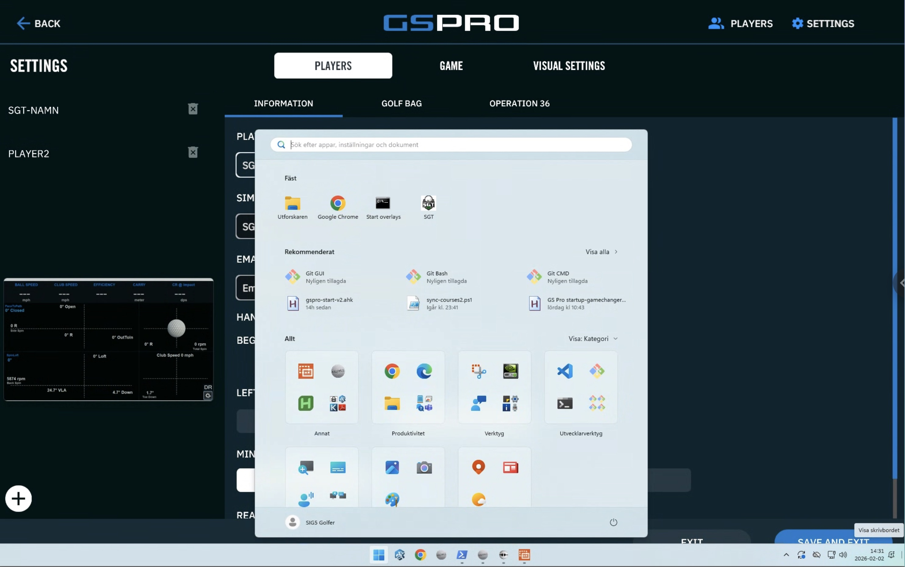
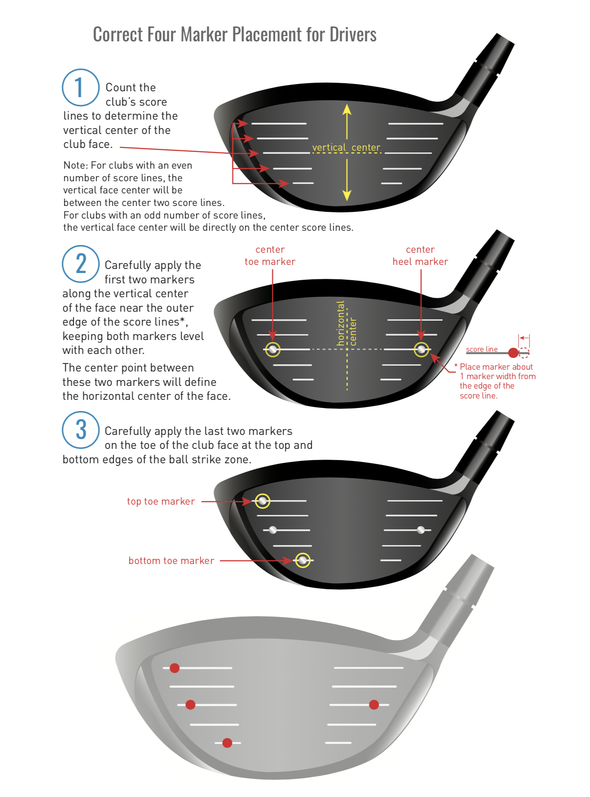
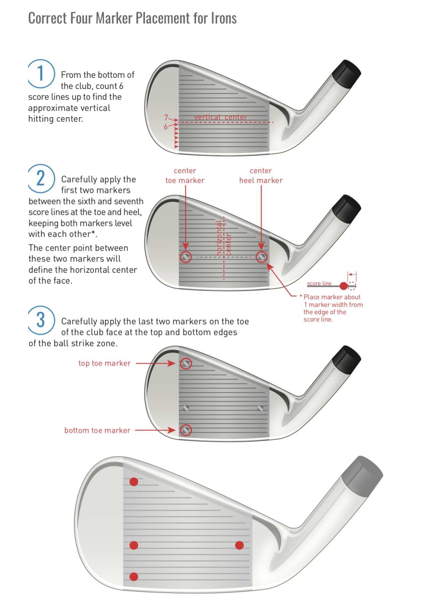
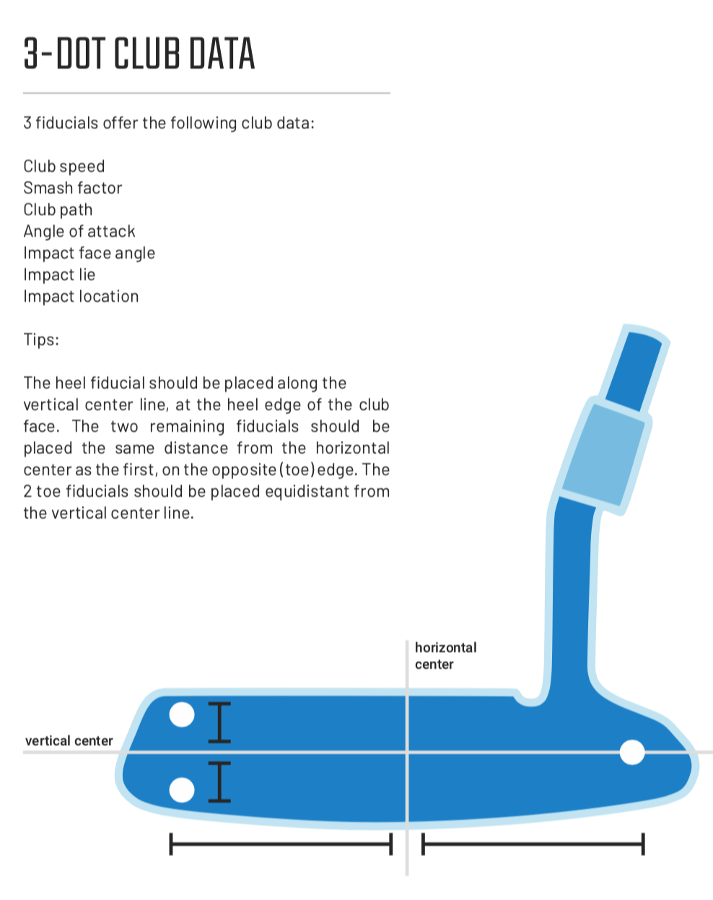

Kom igång
Första gången? Följ dessa steg för att börja spela.
Starta Practice
Klicka Practice och sedan Driving Range på skärmen.
Placera bollen
Lägg bollen i den svarta rutan på mattan. Se Bollplacering för detaljer.
Vänta på grönt
När
pilarna på skärmen
(nedan) lyser grönt ser systemet bollen - då är det klart att
slå!
Den gröna lampan i båset är ytterligare en indikator.

Sikta och slå
Sikta parallellt med mattan som är riktad rakt mot duken.
Bollplacering
Så här lägger du bollen rätt på mattan.

I den svarta rutan
Placera bollen i den svarta rutan som finns markerad på mattan.
Endast EN boll
Det får bara finnas en boll i eller runt det markerade området. Flera bollar eller andra föremål gör att kameran inte kan mäta.
Kontrollera pilarna
När bollen ligger rätt lyser pilarna på skärmen grönt - då är det klart att slå. Den gröna lampan i båset är ytterligare en indikator.
Undvik rutan med fötterna
Stå inte i rutan med vita skor - det kan störa kamerans vitbalans. (Gäller matta 1-2 och 4-8.)
Spela en runda
Från huvudmenyn till första hålet i fem steg.
Local Match
Klicka på Local Match i huvudmenyn för att starta en runda med spelare på plats.
Välj bana
Över 2000 banor att välja mellan. Använd sökfältet eller filtrera efter favoriter.
Välj spelare
Lägg till med +, ta bort med X. Max 8 spelare. Välj höger- eller vänsterhänt.
Bana 3: hänthet extra viktigt.
Match Settings
Start Game
Klicka och ni är igång!
Genvägar
Tangentbordskommandon under spel.
Speltips
Snabbreferens för vanliga spelsituationer.
🎯 Siktläge (J)
Hoppar kameran till landningsområdet eller flaggan. Finjustera siktet med hårkors. Perfekt för approach-slag där du inte ser greenen.
🎳 Green Heatmap (Y)
Visar höjdkurvor på greenen med färgkarta. Använd för att läsa lutning innan putt. Siktet justeras med musen eller piltangenterna.
⛳ Puttning
Tre alternativ: putta IRL på puttytan, auto-putt (datorn beräknar), eller manuell putt på simulatorn. Stimp är snabbare än vanliga svenska greener.
🎸 Lie & Påverkan
Information om bollens läge finns längst ner på minikartan.
- Uppför/Nedför: Påverkar höjd och längd
- Sidolutning: "Left" = bollen under fötterna, tendens åt vänster
- Rough: Reducerad spinn och avstånd
🔬 Range Finder (R)
Öppnar avståndsmätaren. Visar exakt avstånd till flagga och andra punkter på banan.
👁 Free Look (F5)
Flyg fritt över banan med W/A/S/D + högerklick. Bra för att scouta blindslag och studera banlayouten.
Lägen
Hur olika underlag, väder och terräng påverkar dina slag i GSPro.
Underlag
🏖 Sand
Dynamisk påverkan beroende på slaglängd. Korta slag (upp till ~20m) tappar nästan 50% längd och mycket spinn. Längre slag (80m+) tappar bara ~7% med bibehållen spinn. Däremellan skalas förlusten gradvis.
🌿 Rough
Cirka 10% förlust på korta slag, avtagande till ~5% vid 70m+. Bollen rullar ut lite längre eftersom spinn reduceras.
🌿🌿 Deep Rough
Dynamiskt som sand. Upp till 140m: 25-35% förlust. Över 140m ökar förlusten ytterligare. Påverkas av bollhastighet (hög = mer förlust), vertikal launch och spinn (lägre launch/spinn = mer förlust).
🌲 Pine Straw
Beter sig ungefär som vanlig rough (~5-10% förlust).
🧱 Concrete
I princip som fairway upp till ~150m. Vid slag över 175m börjar längdförlusten bli dramatisk.
Terräng
⛰ Höjdskillnad
Tumregel: 1 meter längdförlust per meter uppåt (och tvärtom nedför). Inte exakt men tillräckligt nära för att planera klubbval.
↗ Lutning (sidlut)
Påverkar bollens utgångsriktning. Effekten ökar med slaglängd:
- 1° lutning på 100m ≈ ~1m avdrift
- 1° lutning på 200m ≈ ~3m avdrift
- 3° lutning på 200m ≈ ~9m avdrift
Påverkas av vertikal launch och bollhastighet - längre slag påverkas mer.
Väder & Miljö
💨 Vind
Vind i GSPro påverkar mindre än utomhus. Exempel vid 3 m/s:
- Sidvind: ~8m avdrift på 200m
- Motvind: ~7m förlust från 150m
Höga slag påverkas mer än låga (logiskt), men skillnaden är inte lika stor som utomhus.
🏔 Altitude (höjd över havet)
Tumregel: ~2% extra carry per 1000 fot höjd, men i praktiken ofta mindre. Wedgar och drives påverkas minst. Störst effekt (nära 2%) får du med 7-trä eller järn 5-6.
Registrera dig för tävlingar
Engångsregistrering - görs en gång, sedan är du redo att tävla.
🏆 HobbyTouren Indoor
Veckotävlingar och majors för alla hcp-klasser. Spela när det passar dig! Öppen för alla. Du spelar med tourbollar i sval, vädersäker miljö och får exakt data på varje slag.
🏆 H40+ Scratch Indoor
Seriespel för klubbar inom Östergötland. För dig som är 40+. 3-mannalag med singel och shamble. Representanter från Landeryd, Linköping, Norrköping, Mjölby och Vreta.
Skapa konto på SimulatorGolfTour
Gå till simulatorgolftour.com och klicka på profilikonen i övre högra hörnet. Välj "Sign Up" och fyll i dina uppgifter. Välj ett username.
Spara dina uppgifter
När du registrerat dig, spara två saker:
SGT UID - ditt unika ID-nummer
Båda behövs för att koppla ditt konto till GSPro.
Anmäl dig till HobbyTouren
Maila ditt USERNAME till fredrik@lundberg.one så blir du inlagd i tävlingen. Du måste vara registrerad hos Fredrik innan du kan spela.
Klasser & avgift (HobbyTouren)
Herrar - 2 klasser
Scratch och Netto (med hcp). Du deltar automatiskt i båda. Avgift: 100 kr (50 kr scratch + 50 kr netto).
Damer - 1 klass
Netto-klass. Avgift: 50 kr.
Betalning
Swisha till Sweden Indoor Golf AB: 123 196 97 32. Ange "HT" som meddelande.
Spela tävling
Gör detta varje gång du spelar en tävlingsrunda.
Koppla ditt SGT-konto i GSPro
Öppna spelarinställningar
I GSPro, gå till Settings och sedan fliken Players.
Fyll i dina uppgifter
Player Name: Måste matcha ditt SGT username
EXAKT (skiftlägeskänsligt!).
SGT UID: Ditt unika ID från
SimulatorGolfTour.
⚡ Genväg!
Du behöver inte leta upp ditt SGT UID manuellt. Fyll i ditt SGT-namn under Player Name, klicka sedan på SGT-genvägen i Windows startmeny (den finns fastnålad). Den hämtar automatiskt ditt SGT UID och fyller i det åt dig.

Spara inställningar och gå tillbaka till startsidan.
Starta
På startsidan, klicka Tournaments.
Välj tävling
Välj rätt användare i användarväljaren (den med ditt kopplade SGT-konto). Välj sedan HobbyTouren Indoor i listan. Spela och njut!
Vanliga problem
Ser inte tävlingen?
Kontrollera att din Player Name matchar ditt SGT username EXAKT (inklusive stora/små bokstäver) och att du har fyllt i korrekt SGT UID. Kontrollera också att du är inlagd i tävlingen.
Resultat registrerades inte?
Beror oftast på att Player Name och SGT username inte matchar exakt. Dubbelkolla skiftläget på alla bokstäver.
Vandringspokaler
🏆 Major Master
Bäst på alla 3 majors totalt.
🏆 HobbyTouren Leaderboard
Bäst totalt på alla veckotävlingar + livetävlingar.
🏆 Fredex Cup
Vinnaren av 18-hålstävlingen i v11 (avslutningstävlingen).
Club Markers
Extra klubbdata för den som vill gå djupare.
Vad är det?
Små markeringar som fästs på dina klubblad (4 st per klubba). Ett set räcker till 14+ klubbor.
Köp & hämtning
Köps via bokningssystemet MATCHi. Kvitteras ut i hallen under bemannade tider (mån-ons, 14-20).
Placering per klubbtyp



Första hjälpen
När något inte fungerar - följ dessa steg i ordning.
Kontakt
Behöver du hjälp? Hör av dig.